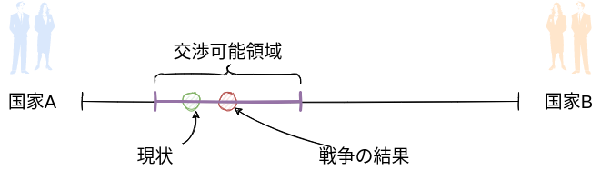

安全保障政策
政治学入門
はじめに
戦争＝利害対立＋外交の失敗
\(\leadsto\)安全保障政策＝これらの要因を解消すること
- 現状変更の意図
- 情報の非対称性
- コミットメント問題
1 軍事力と平和
1.1 抑止の能力
バランシング：内的・外的
\[ \textrm{現状変更を望む国家Aの戦争の利益}=w - c_A \]
- 勢力均衡 (balance of power) (Waltz 2010)
- 勢力優位 (preponderance of power)
- 権力移行 (transition of power)
現状の利益配分／国力の分布



1.2 抑止の信憑性
\[ \textrm{現状維持を望む国家Bの戦争の利益}= 1-w - c_B \]
- ロックイン
- 埋没費用
抑止力\(=\)抑止の能力\(\times\)抑止の信憑性
- 抑止力の検証？
1.3 安全保障のジレンマ
先制攻撃
安全保障のジレンマ(Jervis 1978)／スパイラル・モデル
軍拡のシナリオ
- 国家\(A\)と国家\(B\)の現状の国力は\(w\)と\(1-w\)である。
- 国家\(A\)だけが軍備拡大をすると国力は\(w_A\)に上がるが、費用\(c_A\)を支払う。
- 国家\(B\)だけが軍備拡大をすると国力は\(1-w_B\)に上がるが、費用\(c_B\)を支払う。
- 互いに軍備拡大をすると国力は変わらず、費用を支払う。
| A, B | 現状維持 | 軍備拡大 |
|---|---|---|
| 現状維持 | \(w, 1-w\) | \(w_B, 1-w_B-c_B\) |
| 軍備拡大 | \(w_A-c_A, 1-w_A\) | \(w-c_A, 1-w-c_B\) |
- 一方的な不利は望まない（\(w_B < w - c_A\)かつ\(1-w_A < 1-w-c_B\)）
- 一方的な有利を望む？（\(w_A - c_A > w\)かつ\(1-w_B - c_B > 1-w\)）
- 一方的な有利は望まない？（\(w_A - c_A < w\)かつ\(1-w_B - c_B < 1-w\)）
抑止力の拡大\(\leadsto\)戦争？(Slantchev 2003)
1.4 同盟
Alliance Treaty Obligations and Provisions (ATOP) のデータセット(B. Leeds ほか 2002)
An alliance is a formal agreement among independent states to cooperate militarily in the face of potential or realized military conflict.

拡大抑止 (extended deterrence)
- 見捨てられる恐怖
- 評判費用 (reputation cost)／観衆費用 (audience cost)\(\leadsto\)手を縛る (tying hands)
- 埋没費用 (sunk cost)
- 仕掛線 (trip wire)
- 巻き込まれる恐怖


拡大抑止の効果


見捨てられる可能性
1.5 軍事力の限界
軍事力は平和の基礎：利益と軍事力の配分の一致\(\leadsto\)平和
軍備拡大\(\leadsto\)平和？
リベラルな平和／カント的平和(Oneal と Russet 1997; Oneal と Russett 1999)1／リベラル国際秩序 (liberal international order: ILO) (Ikenberry 2009, 2018)？
1 カントの「永遠平和のために」がこうした思想の潮流とする見方のため。
2 国際法と平和
2.1 戦争の違法化
国際連合 (the United Nations)／武力行使禁止原則
国連憲章 第2条3項
すべての加盟国は、その国際紛争を平和的手段によって国際の平和及び安全並びに正義を危くしないように解決しなければならない。
国連憲章 第2条4項
すべての加盟国は、その国際関係において、武力による威嚇又は武力の行使を、いかなる国の領土保全又は政治的独立に対するものも、また、国際連合の目的と両立しない他のいかなる方法によるものも慎まなければならない。
自衛権 (right of self-defense)
国連憲章 第51条
この憲章のいかなる規定も、国際連合加盟国に対して武力攻撃が発生した場合には、安全保障理事会が国際の平和及び安全の維持に必要な措置をとるまでの間、個別的又は集団的自衛の固有の権利を害するものではない。
2.2 集団安全保障
集団的安全保障 (collective security)
- 同盟？
安全保障理事会 (Security Council: SC)

国連憲章 第24条1項
国際連合の迅速且つ有効な行動を確保するために、国際連合加盟国は、国際の平和及び安全の維持に関する主要な責任を安全保障理事会に負わせるものとし、且つ、安全保障理事会がこの責任に基く義務を果すに当って加盟国に代って行動することに同意する。
国連憲章 第39条
安全保障理事会は、平和に対する脅威、平和の破壊又は侵略行為の存在を決定し、並びに、国際の平和及び安全を維持し又は回復するために、勧告をし、又は第41条及び第42条に従っていかなる措置をとるかを決定する。
国連憲章 第41条
安全保障理事会は、その決定を実施するために、兵力の使用を伴わないいかなる措置を使用すべきかを決定することができ、且つ、この措置を適用するように国際連合加盟国に要請することができる。…
国連憲章 第42条
安全保障理事会は、第41条に定める措置では不充分であろうと認め、又は不充分なことが判明したと認めるときは、国際の平和及び安全の維持又は回復に必要な空軍、海軍又は陸軍の行動をとることができる。…
国連憲章 第23条
- 安全保障理事会は、15の国際連合加盟国で構成する。中華民国、フランス、ソヴィエト社会主義共和国連邦、グレート・ブリテン及び北部アイルランド連合王国及びアメリカ合衆国は、安全保障理事会の常任理事国となる。総会は、第一に国際の平和及び安全の維持とこの機構のその他の目的とに対する国際連合加盟国の貢献に、更に衡平な地理的分配に特に妥当な考慮を払って、安全保障理事会の非常任理事国となる他の10の国際連合加盟国を選挙する。
- 安全保障理事会の非常任理事国は、2年の任期で選挙される。…退任理事国は、引き続いて再選される資格はない。
- （略）
国連憲章 第25条
国際連合加盟国は、安全保障理事会の決定をこの憲章に従って受諾し且つ履行することに同意する。
国連憲章 第27条
- 安全保障理事会の各理事国は、1個の投票権を有する。
- 手続事項に関する安全保障理事会の決定は、9理事国の賛成投票によって行われる。
- その他のすべての事項に関する安全保障理事会の決定は、常任理事国の同意投票を含む9理事国の賛成投票によって行われる。但し、第6章及び第52条3に基く決定については、紛争当事国は、投票を棄権しなければならない。
2.3 集団安全保障の機能と限界
- 抑止力の向上／コミットメント問題の回避
- 費用分担 (burden sharing)／取引費用 (transaction cost)／合意確保

朝鮮戦争／安保理決議83
平和のための結集 (Uniting for Peace) 決議／国連緊急特別総会 (emergency special session: ESS)
平和のための結集決議 主文1
Resolves that if the Security Council, because of lack of unanimity of the permanent members, fails to exercise its primary responsibility for the maintenance of international peace and security in any case where there appears to be a threat to the peace, breach of the peace, or act of aggression, the General Assembly shall consider the matter immediately with a view to making appropriate recommendations to Members for collective measures, including in the case of a breach of the peace or act of aggression the use of armed force when necessary, to maintain or restore international peace and security.
平和維持活動 (peacekeeping operation)


湾岸戦争／安保理決議678
国連安保理決議678
The Security Council,
Recalling and reaffirming its resolutions 660 (1990) of 2 August 1990, 661 (1990) of 6 August 1990, 662 (1990) of 9 August 1990, 664 (1990) of 18 August 1990, 665 (1990) of 25 August 1990, 666 (1990) of 13 September 1990, 667 (1990) of 16 September 1990, 669 (1990) of 24 September 1990, 670 (1990) of 25 September 1990, 674 (1990) of of 29 October 1990 and 677 (1990) of 28 November 1990.
Noting that, despite all efforts by the United Nations, Iraq refuses to comply with its obligation to implement resolution 660 (1990) and the above-mentioned subsequent relevant resolutions, in flagrant contempt of the Security Council,
Mindful of its duties and responsibilities under the Charter of the United Nations for the maintenance and preservation of international peace and security,
Determined to secure full compliance with its decisions,
Acting under Chapter VII of the Charter,
Demands that Iraq comply fully with resolution 660 (1990) and all subsequent relevant resolutions, and decides, while maintaining all its decisions, to allow Iraq one final opportunity, as a pause of goodwil, to do so;
Authorizes Member States co-operating with the Government of Kuwait, unless Iraq on or before 15 January 1991 fully implements, as set forth in paragraph 1 above, the above-mentioned resolutions, to use all necessary means to uphold and implement resolution 660 (1990) and all subsequent relevant resolutions and to restore international peace and security in the area;
Requests all States to provide appropriate support for the actions undertaken in pursuance of paragraph 2 of the present resolution;
Requests the States concerned to keep the Security Council regularly informed on the progress of actions undertaken pursuant to paragraphs 2 and 3 of the present resolution;
Decides to remain seized of the matter.
3 民主主義と平和
3.1 民主的平和
民主的平和 (democratic peace: DP)
- 民主主義のデータ：Polity 5／V-Dem
- 競争的権威主義、選挙権威主義(Gandhi と Lust-Okar 2009)2
- 権威主義国のパフォーマンス？3
- 民主主義の後退 (democracy backsliding)
2 東島雅晶「恐怖支配から恩寵政治へ？ 権威主義体制の変貌する統治手法」(2022) 中央公論；浅古泰史・東島雅昌「「民主主義 vs. 権威主義」のゆくえ」(2022) 経済セミナー10・11月号
3 東島雅晶「民主主義と権威主義、どちらの「社会経済パフォーマンス」が上なのか？ データ分析が示す驚きの結果」(2022) 現代ビジネス；安中進「民主主義は権威主義に劣るのか? : コロナ禍における政治体制の実証分析」(2021) 中央公論；安中進「政治体制は豊かさや健康にどのような影響を及ぼすのか？」(2022) 経済セミナー10・11月号


3.2 民主的平和の論理
- アカウンタビリティ
- 権威主義国による攻撃(Reiter と Stam 2003)
- 独裁者の末路(Goemans 2008)
- 情報の非対称性
- 報道の自由(Van Belle 1997)／与野党の議論(Schultz 1998)
- 観衆費用(Fearon 1994)
- 観衆費用の存在(M. Tomz 2007; Kurizaki と Whang 2015)
- 観衆費用の不在Katagiri と Min (2019)
- 権威主義国における観衆費用(Weiss 2013; Weeks 2008)
- 民主主義国による威嚇の信憑性の低さ(Downes と Sechser 2012)
- 透明性？(Finel と Lord 1999)
- 規範／アイデンティティ／信頼(Doyle 1986; Risse-Kappen 1995)
- 妥協(Mousseau 1998; Dixon 1994)
- 市民の態度(M. R. Tomz と Weeks 2013)
- 体制間競争？
- 女性政治家
- ジェンダー平等／女性議員／女性参政権と軍事支出／武力行使(Reiter 2015; Barnhart ほか 2020)
- 女性指導者と武力紛争(Koch と Fulton 2011; Caprioli と Boyer 2001)
- 指導者になる女性(Schramm と Stark 2020)
- 平和的な姿勢？(Schwartz と Blair 2020)


3.3 民意と戦争
旗下結集効果 (rally [’round the flag] effect)／陽動戦争 (diversionary war)／復活のためのギャンブル (gambling for resurrection)

{kind=link}
.svg){kind=link}
{kind=link}
{kind=link}
- インフレ率／失業率と紛争
- 権威主義国(Mitchell と Prins 2004)
- 民主主義国(Arena と Palmer 2009; Fordham 1998)
- 国際危機と政治的生き残り(Chiozza と Goemans 2003)
- 選挙後の紛争(Gaubatz 1991)
3.4 民主化による平和
相関\(\neq\)因果
- 自由市場経済(Gartzke 2007)
- 領土問題(Thompson 1996; Gibler と Tir 2010, 2014)
- 共通の脅威(Farber と Gowa 1997; McDonald 2015)
民主化\(\leadsto\)平和？
- 新興民主主義国や民主化と紛争(Mansfield と Snyder 1995)
参考文献
Arena, Philip, と Glenn Palmer. 2009. 「Politics or the economy? Domestic correlates of dispute involvement in developed democracies」. International Studies Quarterly 53 (4): 955–75.
Barnhart, Joslyn N, Robert F Trager, Elizabeth N Saunders, と Allan Dafoe. 2020. 「The suffragist peace」. International Organization 74 (4): 633–70.
Berkemeier, Molly, と Matthew Fuhrmann. 2018. 「Reassessing the fulfillment of alliance commitments in war」. Research & Politics 5 (2): 2053168018779697.
Caprioli, Mary, と Mark A Boyer. 2001. 「Gender, violence, and international crisis」. Journal of conflict resolution 45 (4): 503–18.
Chiozza, Giacomo, と Hein E Goemans. 2003. 「Peace through insecurity: Tenure and international conflict」. Journal of Conflict Resolution 47 (4): 443–67.
Dixon, William J. 1994. 「Democracy and the peaceful settlement of international conflict」. American political science review 88 (1): 14–32.
Downes, Alexander B, と Todd S Sechser. 2012. 「The illusion of democratic credibility」. International Organization 66 (3): 457–89.
Doyle, Michael W. 1986. 「Liberalism and world politics」. American political science review 80 (4): 1151–69.
Farber, Henry S, と Joanne Gowa. 1997. 「Common interests or common polities? Reinterpreting the democratic peace」. The Journal of Politics 59 (2): 393–417.
Fearon, James D. 1994. 「Domestic political audiences and the escalation of international disputes」. American political science review 88 (3): 577–92.
Finel, Bernard I, と Kristin M Lord. 1999. 「The surprising logic of transparency」. International studies quarterly 43 (2): 315–39.
Fordham, Benjamin. 1998. 「Partisanship, macroeconomic policy, and US uses of force, 1949-1994」. Journal of Conflict Resolution 42 (4): 418–39.
Fuhrmann, Matthew, と Todd S Sechser. 2014. 「Signaling Alliance Commitments: Hand-Tying and Sunk Costs in Extended Nuclear Deterrence」. American Journal of Political Science 58 (4): 919–35.
Gandhi, Jennifer, と Ellen Lust-Okar. 2009. 「Elections under authoritarianism」. Annual review of political science 12: 403–22.
Gartzke, Erik. 2007. 「The capitalist peace」. American journal of political science 51 (1): 166–91.
Gaubatz, Kurt Taylor. 1991. 「Election cycles and war」. Journal of Conflict Resolution 35 (2): 212–44.
Gibler, Douglas M, と Jaroslav Tir. 2010. 「Settled borders and regime type: Democratic transitions as consequences of peaceful territorial transfers」. American Journal of Political Science 54 (4): 951–68.
———. 2014. 「Territorial peace and democratic clustering」. The Journal of Politics 76 (1): 27–40.
Goemans, Hein E. 2008. 「Which way out? The manner and consequences of losing office」. Journal of Conflict Resolution 52 (6): 771–94.
Ikenberry, G John. 2009. 「Liberal internationalism 3.0: America and the dilemmas of liberal world order」. Perspectives on politics 7 (1): 71–87.
———. 2018. 「The end of liberal international order?」 International Affairs 94 (1): 7–23.
Jervis, Robert. 1978. 「Cooperation under the security dilemma」. World politics 30 (2): 167–214.
Katagiri, Azusa, と Eric Min. 2019. 「The credibility of public and private signals: A document-based approach」. American Political Science Review 113 (1): 156–72.
Koch, Michael T, と Sarah A Fulton. 2011. 「In the defense of women: Gender, office holding, and national security policy in established democracies」. The Journal of politics 73 (1): 1–16.
Kurizaki, Shuhei, と Taehee Whang. 2015. 「Detecting audience costs in international disputes」. International Organization 69 (4): 949–80.
Leeds, Brett Ashley. 2003. 「Do alliances deter aggression? The influence of military alliances on the initiation of militarized interstate disputes」. American Journal of Political Science 47 (3): 427–39.
Leeds, Brett, Jeffrey Ritter, Sara Mitchell, と Andrew Long. 2002. 「Alliance treaty obligations and provisions, 1815-1944」. International Interactions 28 (3): 237–60.
Mansfield, Edward D, と Jack Snyder. 1995. 「Democratization and the Danger of War」. International security 20 (1): 5–38.
McDonald, Patrick J. 2015. 「Great powers, hierarchy, and endogenous regimes: Rethinking the domestic causes of peace」. International Organization 69 (3): 557–88.
Mitchell, Sara McLaughlin, と Brandon C Prins. 2004. 「Rivalry and diversionary uses of force」. Journal of Conflict Resolution 48 (6): 937–61.
Mousseau, Michael. 1998. 「Democracy and compromise in militarized interstate conflicts, 1816-1992」. Journal of Conflict Resolution 42 (2): 210–30.
Oneal, John R, と Bruce M Russet. 1997. 「The classical liberals were right: Democracy, interdependence, and conflict, 1950–1985」. International studies quarterly 41 (2): 267–93.
Oneal, John R, と Bruce Russett. 1999. 「The Kantian peace: The pacific benefits of democracy, interdependence, and international organizations, 1885–1992」. World politics 52 (1): 1–37.
Reiter, Dan. 2015. 「The positivist study of gender and international relations」. Journal of Conflict Resolution 59 (7): 1301–26.
Reiter, Dan, と Allan C Stam. 2003. 「Identifying the culprit: Democracy, dictatorship, and dispute initiation」. American Political Science Review 97 (2): 333–37.
Risse-Kappen, Thomas. 1995. 「Democratic Peace—Warlike Democracies? A Social Constructivist Interpretation of the Liberal Argument」. European Journal of International Relations 1 (4): 491–517.
Schramm, Madison, と Alexandra Stark. 2020. 「Peacemakers or iron ladies? A cross-national study of gender and international conflict」. Security Studies 29 (3): 515–48.
Schultz, Kenneth A. 1998. 「Domestic opposition and signaling in international crises」. American Political Science Review 92 (4): 829–44.
Schwartz, Joshua A, と Christopher W Blair. 2020. 「Do women make more credible threats? Gender stereotypes, audience costs, and crisis bargaining」. International Organization 74 (4): 872–95.
Slantchev, Branislav L. 2003. 「The power to hurt: Costly conflict with completely informed states」. American Political Science Review 97 (1): 123–33.
Snyder, Jack, と Erica D Borghard. 2011. 「The cost of empty threats: A penny, not a pound」. American Political Science Review 105 (3): 437–56.
Thompson, William R. 1996. 「Democracy and peace: putting the cart before the horse?」 International organization 50 (1): 141–74.
Tomz, Michael. 2007. 「Domestic audience costs in international relations: An experimental approach」. International Organization 61 (4): 821–40.
Tomz, Michael R, と Jessica LP Weeks. 2013. 「Public opinion and the democratic peace」. American political science review 107 (4): 849–65.
Trachtenberg, Marc. 2012. 「Audience costs: An historical analysis」. Security Studies 21 (1): 3–42.
Van Belle, Douglas A. 1997. 「Press freedom and the democratic peace」. Journal of peace research 34 (4): 405–14.
Waltz, Kenneth Neal. 2010. 国際政治の理論. ポリティカル・サイエンス・クラシックス. 勁草書房.
Weeks, Jessica L. 2008. 「Autocratic audience costs: Regime type and signaling resolve」. International organization 62 (1): 35–64.
Weiss, Jessica Chen. 2013. 「Authoritarian signaling, mass audiences, and nationalist protest in China」. International Organization 67 (1): 1–35.